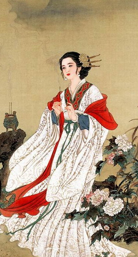

标签：
文化 |

貂
吴金华（2010）
历史小说《三国演义》中的“貂蝉”，作为“连环计”故事的主角，是小说家虚构的人物。
只要检阅宋元以前的文献，特别是可信度很高的史书，例如西晋陈寿的《三国志》、东晋袁宏的《后汉纪》、南朝宋范晔的《后汉书》、北宋司马光的《资治通鉴》等等，我们不难断定：王允定计除董卓是事实，董卓死于吕布之手也是事实；然而“貂蝉”则史无其人，“连环计”则史无其事。
《三国志》记载吕布与董卓之间的纠葛，所涉及的女性只是一位不知名的“侍婢”，《后汉书》的异文为“傅婢”，说白了，就是董卓的贴身丫鬟。陈寿在《吕布传》里记载，早先认董卓为父的吕布之所以决心杀卓，根源在于偶然发生的一次冲突：“卓性刚而褊，忿不思难，尝小失意，拔手戟掷布。布拳捷避之，为卓顾謝，卓意亦解。由是阴怨卓。”董卓拔出自家的“手戟”无情地掷向吕布，只不过是因为吕布犯了点小错，这跟后来吕布私通傅婢一事毫无瓜葛。尽管吕布跟傅婢的暧昧关系并未败露，但此事作为吕布的心病，终于使吕布成了王允集团谋杀董卓的一把尖刀。关于这一点，范晔《吕布传》的记载跟前后的史书大致相同：“卓又使布守中閤，而私与傅婢情通，益不自安。因往见司徒王允，自陈卓几见杀之状。时允与尚书仆射士孙瑞密谋诛卓，因以告布，使为内应。”此外，司徒王允“诛卓”的同谋者，除了尚书仆射士孙瑞，还有司隶校尉黄琬、尚书郑泰、护羌校尉杨瓒等，范晔在《王允传》里均有明确的交代。由此可见，史书不曾为“连环计”的情节提供任何资料；如果说，“貂蝉”的故事还能在“傅婢”身上找到一点蛛丝马迹，那也是来自史书读者的丰富联想。不难设想，当吕布对傅婢吐露“益不自安”的心情时，傅婢或许就是吕布乐于充当王允杀手的诱导者。
傅婢是历史上不知名的小人物，而貂蝉则是说书人或文学家虚拟的大美人。貂蝉，这个充满传奇色彩的名字，无论活跃于民间传说或戏剧舞台，还是出现于诗词歌赋或历史小说，总是跟吕布连在一起的。初步调查表明，直到唐代，貂蝉还不见于文学作品。例如李賀的《吕将军歌》有云：“吕将军，骑赤兔……榼榼银龟揺白马，傅粉女郎火旗下。”
貂蝉进入民间故事的时代，一般的说法是不晚于北宋，因为明代流行的《三国志传》有这样一段：“宋邵康节先生有诗叹曰：董卓无端擅汉权……力斩乱臣凭吕布，舌诛逆贼是貂蝉。”邵康节，指北宋理学家邵雍。不过，据我考察，所谓“宋邵康节先生有诗”云云，跟该书中其他一些无可考稽的宋诗一样，也属于小说家的伪托；在傅璇琮先生等主编、北京大学出版社1992年出版的《全宋诗》第七册中，“邵雍”名下没有辑录这首来历不明的“邵康节”诗，我认为这正是文献学家的严谨之处。此外，清人梁章钜《浪迹续谈》卷六《貂蝉》篇载黄右原语曰：“《开元占经》卷三十三，荧惑犯须女，占注云，《汉书通志》：‘曹操未得志，先诱董卓，进刁蝉以惑其君。’此事异同不可考。而刁蝉之即貂蝉，则确有其人矣。”有人据此推测貂蝉的故事可能滥觞于唐代，也缺乏必要的佐证。《汉书通志》不见于唐、宋史书的艺文志，即使此书曾经在世，也可能出自明、清人之手。事实上，不仅传世的《开元占经》没有黄右原所述的内容，连梁章钜也说“《汉书通志》今亦不传，无以断之”。难怪梁氏不把黄氏的无稽之说载入他的学术名著《三国志旁证》，只是在汇集趣闻逸事的《浪迹续谈》里附记一笔而已。现在看来，传世文献中出现的貂蝉故事，较早而且可信的莫过于南宋时期的金代院本、南戏、元杂剧及元刻话本。当然，上述文本的形成肯定有一个不短的过程，但它的源头是否可以上溯到北宋？现有的资料还不足以做出有力的回答。
正因为貂蝉的故事出自虚构，所以早期话本、剧本的内容不尽相同；如果对照近三百年来流行最广的《三国演义》，人物形象及故事情节的差别就更大了。例如，元刻本《三国志平话》说貂蝉是“关西临洮人”、“本姓任，小字貂蝉”，元杂剧《锦云堂暗定连环计》的介绍就更细了：“本忻州木耳村人氏，任昂之女，小字红昌。因汉灵帝选入宫中，掌貂蝉官来，故名貂蝉。”再如，《平话》说貂蝉原先就是吕布的妻子，不幸在战乱中失散，才流落到王允府中。王允的连环计分为三步：第一步，让太师董卓顾恋貂蝉，并口头答应董卓急于得到貂蝉的要求。第二步，温侯吕布见到貂蝉，说是要“选吉日良时，送貂蝉于太师府去，与温侯完聚”。第三步，趁吕布出差时把貂蝉送到董府。这支三步曲果然奏效了：吕布回董府后，得知董卓占有了貂蝉，顿时怒不可遏，“提剑入堂，见董卓鼻气如雷，卧如肉山，骂老贼无道，一剑断其腔”。在这里，貂蝉所扮演的角色只是“连环计”这张棋盘的关键性的棋子，这只受王允拨弄的棋子，对“连环计”本身似乎一无所知。又如，貂蝉的结局在元、明时代的剧本中曾有近现代人难以接受的情节。在明刻本《三国志传》、清刻本《三国演义》中，吕布死后，貂蝉就不知所终，给读者留下了无限广阔的想象空间。但是，早期的三国戏中有过这样一出：吕布刚死，貂蝉便向关羽献媚，关羽为了断绝红颜之祸，一刀结果了这位美女。明人王世贞《见有演关侯斩貂蝉传奇者感而有述》诗云：“董姬昔为吕，貂蝉居上头……一朝事势异，改服媚其仇。心心托汉寿，语语厌温侯。忿激义鹘拳，眥裂丹凤眸。孤魄残舞衣，腥血溅吴钩。兹事岂必真，可以快千秋。”
上述现象表明，艺术虚构的故事跟历史上的真人真事的不同之处，就在于前者总是随着时代精神的演变而不断地受到加工和改造，内容的古今差异有时会发展到面目全非的程度；而后者则始终维持着基本事实的面貌，象董卓的残暴荒淫，吕布的贪利好色，王允的忠君爱国，这些基本事实不仅在不同时期的史书中没有异词，而且在所有以历史为背景的文学作品里也不曾被颠覆。总之，历史跟文学是两个不同的范畴，史学著作必须追求真实，而文学作品不能没有虚构。好在，貂蝉的形象随着历史的车轮不断前进，终于给喜爱《三国演义》的读者留下了这样的印象：她不仅是一位足以跟西施、王昭君、杨玉环比美的绝代佳人，还是一位深明大义、铲除国贼的功人。李渔《批阅三国志》赞扬道：“为西施易，为貂蝉难。西施只要哄得一个人，貂蝉却要哄两个人，使出两副面孔，大费苦心。”毛宗岗说：“我谓貂蝉之功可书竹帛！”可以想见，与时俱进的貂蝉，在今后的艺术舞台上必将更受欢迎。
附记：
以上是5月12日原稿，名为《貂蝉》。发表于《解放日报》2010年5月17日新论版时，有所删略，并将题目改成《貂蝉究竟是怎样一个人》。
附录：
关于《三国演义》中的“貂蝉”，此前天行健所著的《正品三国》（花山文艺出版社2006）及《清算〈品三国〉》（现代出版社2007）中有几篇值得参考的文章。
《正品三国》以史证百题提醒读者：“演义毕竟是演义，历史终归是历史，不可简单混淆。对于历史的认识，不能仅仅停留在演义的水平，而是要以客观求实的态度，还原历史的真实面目。”其中《貂蝉的下落》一文的结论是：“‘貂蝉’其人，在史书记载中非常模糊，仅仅是一个若明若暗的影子而已。其下落如何，至今已经很难考证了。”
此外，《清算〈品三国〉》指出易中天《品三国》的上百处常识性错误，我对《清算》一
《貂禅的来历》云：“易中天断言：‘貂蝉是元代戏剧家编出来的’。此说不妥。第一，貂蝉的名字虽然不见《后汉书》和《三国志》及裴松之所引诸书，但她的原型是存在的。《后汉书》和《三国志》都说，董卓有一个侍婢（又作傅婢，就是陪房丫鬟）与吕布私通，吕布‘恐事发觉，心不自安’，这是他杀董卓的重要原因之一。第二，有一部叫《汉书通志》的佚书，其中有一条记载说：‘曹操未得志，先诱董卓，进刁蝉以惑其君。’刁蝉，就是貂蝉。总之，貂蝉是有来历的，并不是元代杂剧家凭空编造出来的。”